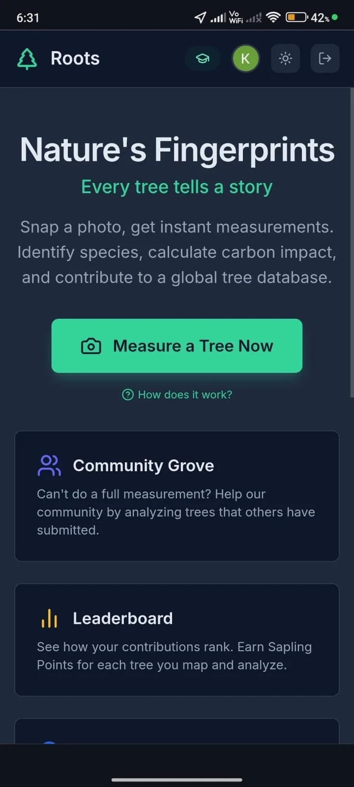
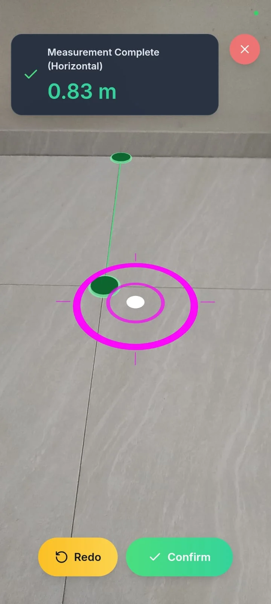
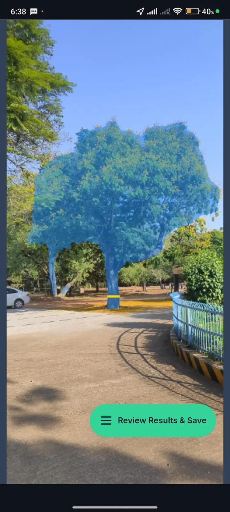
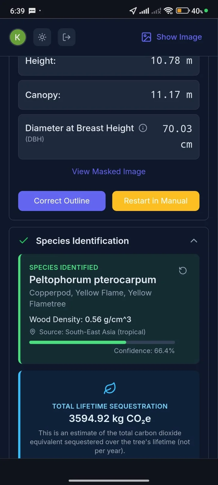
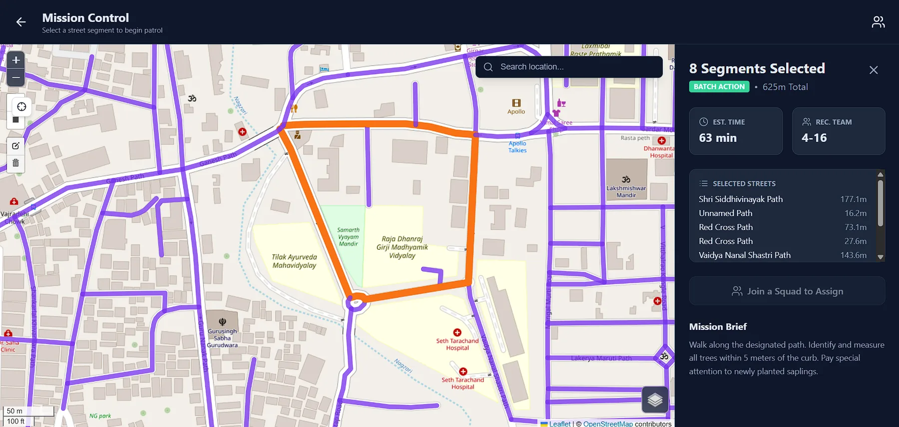
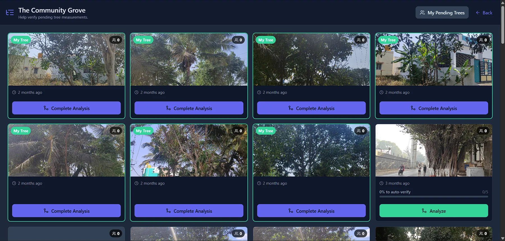

Problem
Urban tree surveys are usually expensive and limited by specialist hardware, making it difficult for communities and city teams to build reliable, up-to-date inventories.
Approach
TreeFolio turns smartphone workflows into a structured measurement pipeline: photo capture or live AR, SAM-based segmentation, species lookup, allometric carbon estimation, and confidence scoring.
- Multi-point segmentation refinement for better tree masks
- Three-tier camera calibration to handle Android and iOS EXIF variance
- Community consensus model to auto-verify contributed measurements
Key Constraints and Fixes
- EXIF inconsistencies across phone models caused calibration drift in early testing
- Physical reference-object workflows increased field friction and reduced completion rate
- WebXR distance measurement replaced physical reference dependency for faster capture
Key Technical Decisions
- Adopted WebXR-assisted distance capture instead of physical reference markers
- Implemented three-tier calibration fallback chain to support diverse phone camera behaviors
- Kept community verification in workflow to reduce single-user measurement outliers
Media Gallery






Outcomes
- Lower entry barrier for tree measurement and monitoring
- Created a repeatable verification workflow for community data quality
- Integrated field operations and analytics into one product surface
- Total trees analyzed: 151
- Total CO2 estimate from analyzed trees: 148,430.15 kg (148.43 t)
Validation note: CO2 estimation uses IPCC-recommended formulae. Larger benchmark sets against professional tools are still being expanded.
Evidence Ledger
| Claim | Evidence | Status |
|---|---|---|
| DBH and distance accuracy are field-usable | DBH MAE 3.42 cm, distance MAE 0.08 m | Verified |
| Field workflow speed is practical | Under 2 minutes per tree in current runs | Verified |
| Broad camera compatibility | Three-tier calibration applied across Android and iOS testing | Verified |
Learnings
- Device heterogeneity is a core product risk in web-first field tools
- Removing physical setup steps has outsized impact on contributor completion rates
- Accuracy reporting must stay coupled to explicit benchmark methodology disclosure